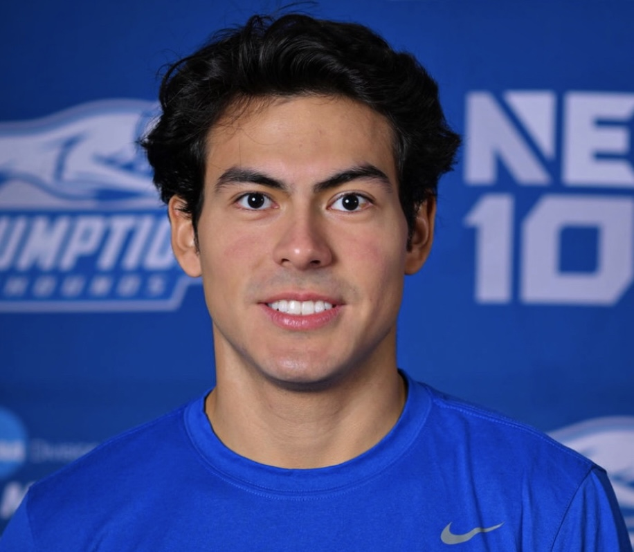

Santiago Alvarez

Summary
I am an incoming junior majoring in Computer Science with a focus on App Development. I am a determined and passionate person who is eager to learn and find solutions to challenging problems. My goal is to apply my knowledge, perseverance, and problem-solving abilities to create a lasting, positive impact in any future role I am presented with.
Education
- Bachelor of Science in Computer Science - Assumption University 25
Work Experience
- Fitness Center Front Desk Associate - Plourde Recreation Center
January 2023 - Present
- - Enhance customer experience by delivering exceptional customer service to facility users, guide users to desired locations/events, ensure a positive and welcoming environment.
- - Handle incoming phone calls and manage the rentals and returns of Plourde Equipment.
- Exercise critical thinking and teamwork to address and solve various situations encountered during each shift.
Skills
- Customer Service
- Problem Solving
- Teamwork
- Communication
- People Management
Skills
- Object-Oriented Programming
- Python
- Web Development
Contact Info
LinkedIn: Santiago Alvarez